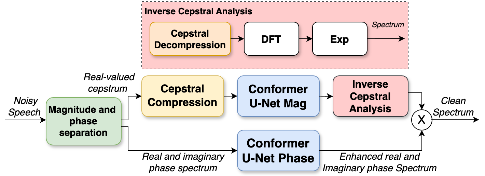
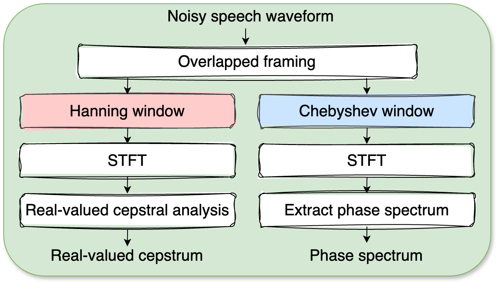

Abstract
In recent decades, considerable research has been devoted to speech enhancement leveraging the short-term Fourier transform (STFT) analysis. As speech processing technology evolves, the significance of phase information in enhancing speech intelligibility becomes more noticeable. Typically, the Hanning window has been widely employed as analysis window in STFT. In this study, we propose the Chebyshev window for phase analysis, and the Hanning window for magnitude analysis. Next, we introduce a novel cepstral domain enhancement approach designed to robustly reinforce the harmonic structure of speech. The performance of our model is evaluated using the DNS challenge test set as well as the naturalistic APOLLO Fearless Steps evaluation set. Experimental results demonstrate that the Chebyshev-based phase solution outperforms the Hanning option for in phase-aware speech enhancement. Furthermore, the incorporation of quefrency emphasis proves effective in enhancing overall speech quality.

Fig. 1: The schematic workflow:
Input noisy speech waveform is separated into cepstrum domain magnitude and spectrum domain phase, and these two features will be processed by different Conformer U-Net

Fig. 2: Using different analysis window for magnitude and phase extraction
Test Datasets
DNS-Challenge non-blind dataset [1]: A synthetic data set.APOLLO Fearless Steps dataset [2]: A naturalistic noisy data set with 8kHz sampling rate from Fearless Steps Challenge: Phase II.
Audio Samples
DNS-Challenge non-blind dataset
| Samples | Noisy | Clean | DTLN [3] | Spec match | proposed |
|---|---|---|---|---|---|
| Sample 1 | |||||
| Sample 2 | |||||
| Sample 3 | |||||
| Sample 4 | |||||
| Sample 5 |
APOLLO Fearless Steps dataset
| Samples | Noisy | DTLN [3] | Spec match | Proposed |
|---|---|---|---|---|
| Sample 1 | ||||
| Sample 2 | ||||
| Sample 3 | ||||
| Sample 4 | ||||
| Sample 5 |
References
[1] Reddy, Chandan K. A. et al. “The INTERSPEECH 2020 Deep Noise Suppression Challenge: Datasets, Subjective Testing Framework, and Challenge Results.” Interspeech (2020).[2] J. H. L. Hansen, A. Sangwan, A. Joglekar, A. E. Bulut, L. Kaushik, and C. Yu, “Fearless steps: Apollo-11 corpus advancements for speech technologies from earth to the moon,” in Interspeech, 2018
[3] N. L. Westhausen and B. T. Meyer, “Dual-Signal Transformation LSTM Network for Real-Time Noise Suppression,” in Proc.Interspeech 2020